32×32 · classic · refined · ruins · cut
production-32-classic-amber · 8 sconces · 211 ms render · Up stairs · Down stairs


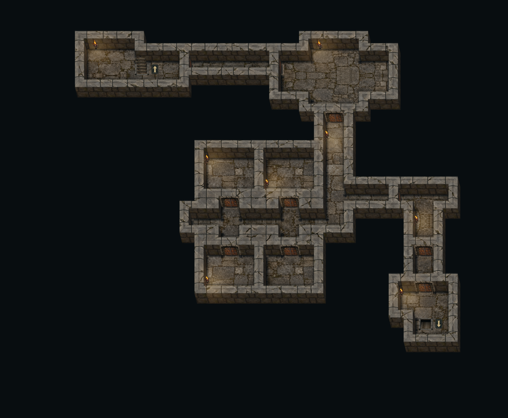
12 generated maps, 3 sizes, 2 layouts, 2 seeds each. All seven floors, three wall families and five cap assemblies run through the actual editor and its shared export renderer.
Validation report · Zoom and interaction details · 300-layout placement audit
Recommended Ancient theme: Small · Medium · Large
Architecture close-ups: North sconce · Side sconce · North doorway · South doorway · East doorway · West doorway
production-32-classic-amber · 8 sconces · 211 ms render · Up stairs · Down stairs

production-32-classic-slate · 13 sconces · 288 ms render · Up stairs · Down stairs
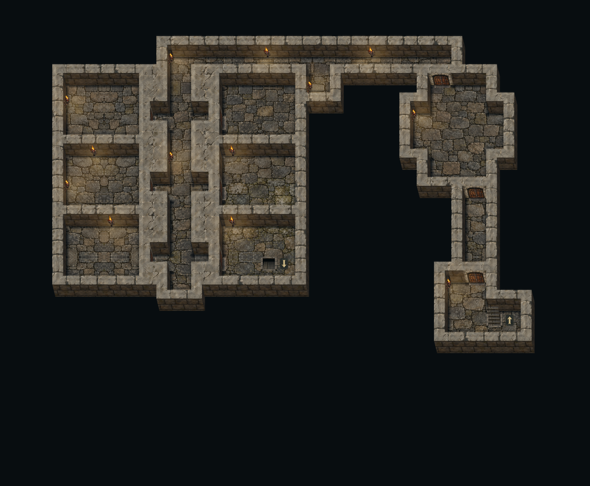
production-32-compact-amber · 10 sconces · 423 ms render · Up stairs · Down stairs
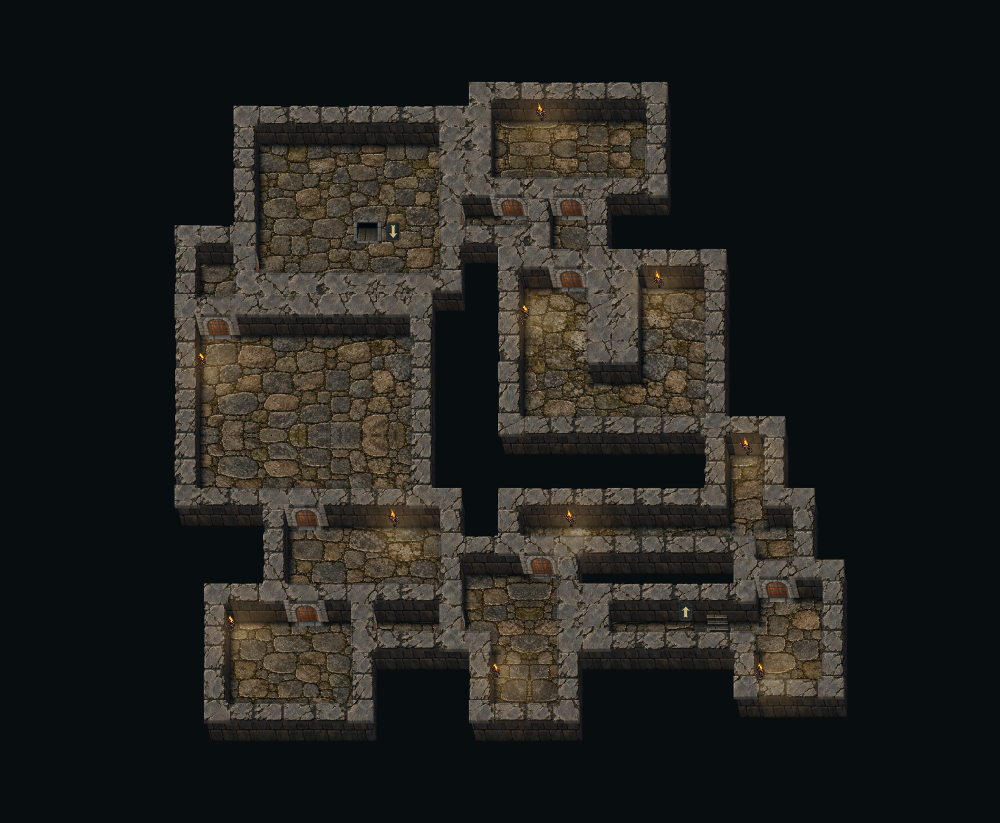
production-32-compact-slate · 14 sconces · 203 ms render · Up stairs · Down stairs
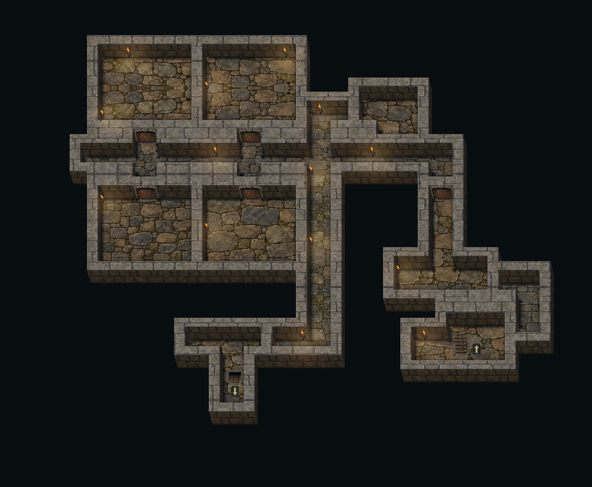
production-64-classic-amber · 50 sconces · 1771 ms render · Up stairs · Down stairs
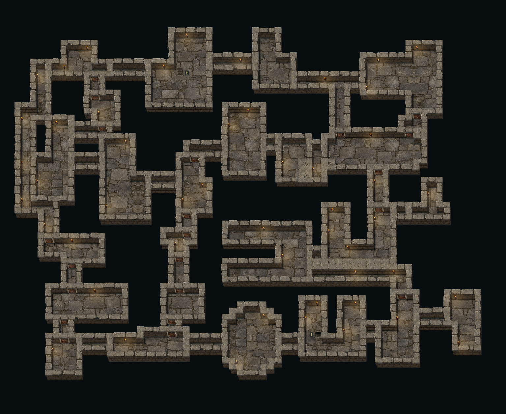
production-64-classic-slate · 50 sconces · 1182 ms render · Up stairs · Down stairs
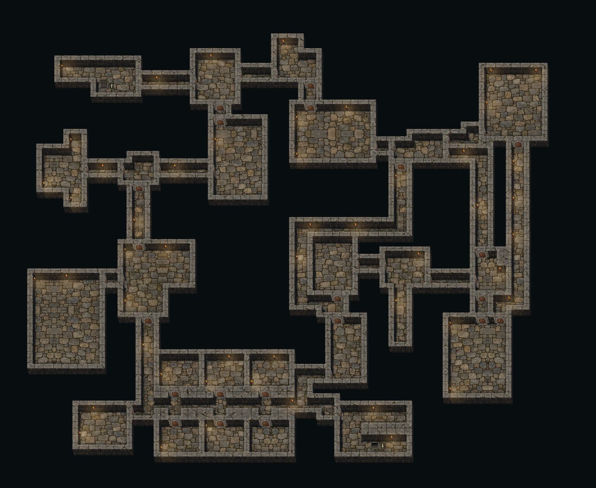
production-64-compact-amber · 52 sconces · 1280 ms render · Up stairs · Down stairs
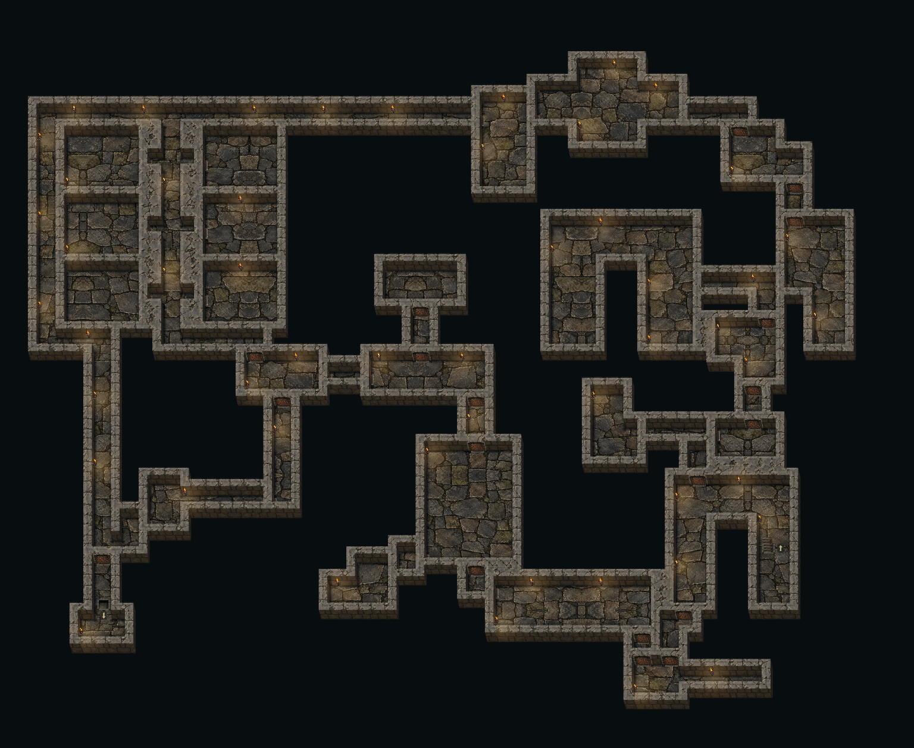
production-64-compact-slate · 77 sconces · 1970 ms render · Up stairs · Down stairs
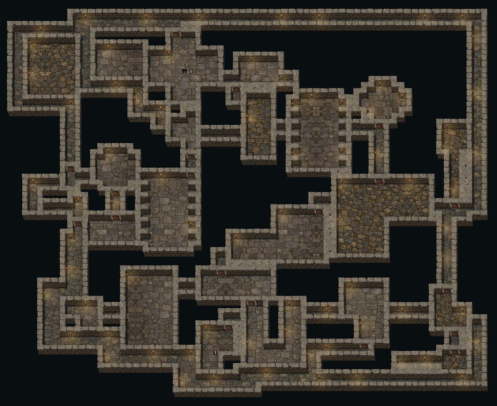
production-96-classic-amber · 116 sconces · 1217 ms render · Up stairs · Down stairs
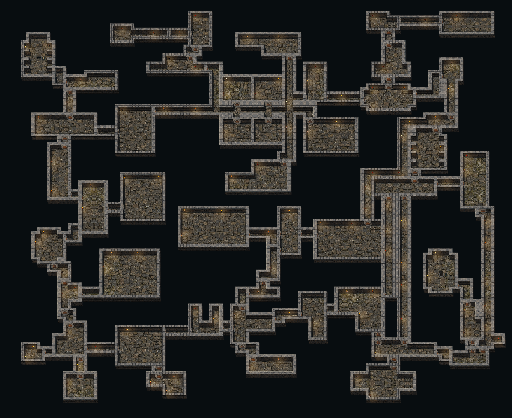
production-96-classic-slate · 121 sconces · 3646 ms render · Up stairs · Down stairs
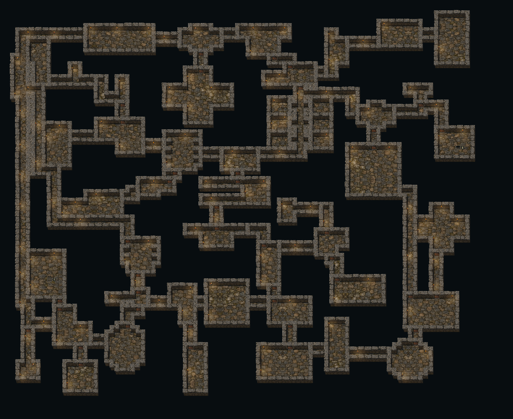
production-96-compact-amber · 115 sconces · 2675 ms render · Up stairs · Down stairs
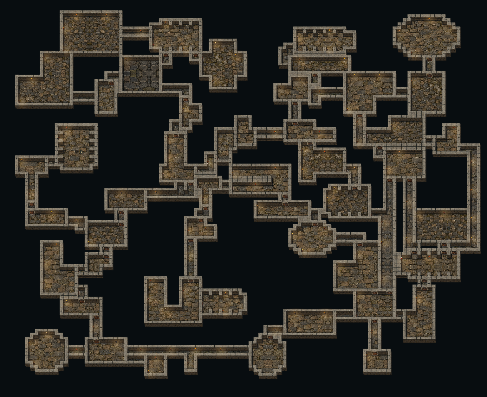
production-96-compact-slate · 124 sconces · 3334 ms render · Up stairs · Down stairs
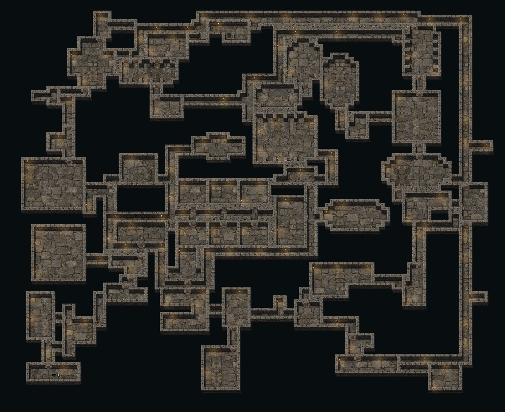